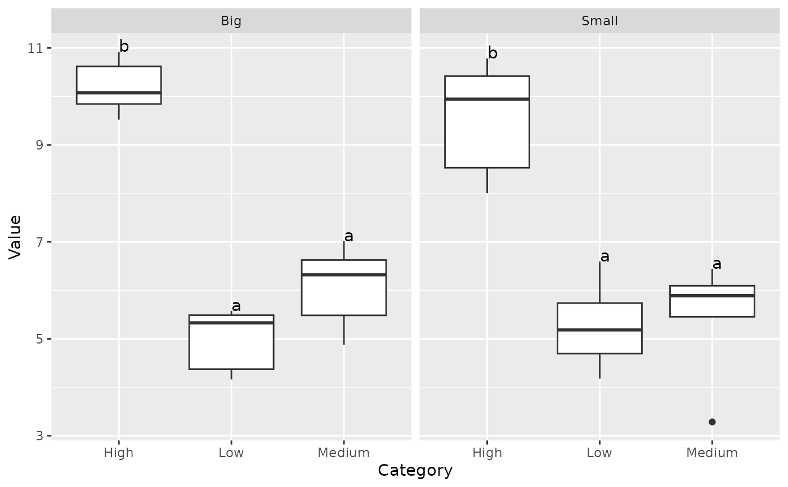
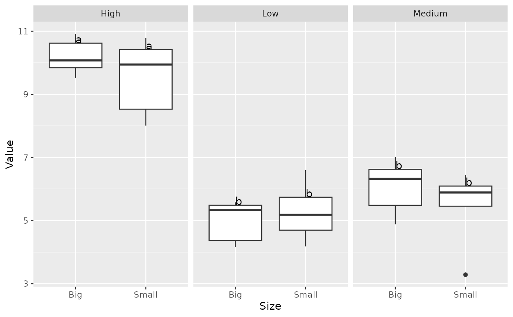

Compact Letter Display Geom Groups with at least one letter in common are not significantly different.
geom_tukey.RdCompact Letter Display Geom Groups with at least one letter in common are not significantly different.
Arguments
- test
Which test to run for pairwise comparisons. Default is
tukey.- type
If a grouping variable is provided, determines whether to run separate tests for each facet (
local) or one (global) test with an interaction term betweenxandgroup. Defaults toglobal.- where
Where to put the letters. Either above the box (
box) or above the upper whisker (whisker).- hjust
Horizontal adjustment of label. Argument to
geom_text.- vjust
Vertical adjustment of label. Argument to
geom_text.- size
Label size. Argument to
geom_text.- na.rm
Logical. Whether to remove observations with NAs for the provided factors (i.e.
xandgroup) before plotting.- threshold
Statistical threshold for significance. Defaults to 0.05.
Note
Thank you to Hiroaki Yutani ((https://yutani.rbind.io/post/2017-11-07-ggplot-add/))
and Simon P Couch (https://www.simonpcouch.com/blog/ggplot-pipe-plus/) for two
very helpful blog posts describing the ggplot_add syntax.
References
Piepho, Hans-Peter (2004) "An Algorithm for a Letter-Based Representation of All-Pairwise Comparisons", Journal of Computational and Graphical Statistics, 13(2)456-466.
Graves S, Piepho H, Dorai-Raj LSwhfS (2019). multcompView: Visualizations of Paired Comparisons. R package version 0.1-8, (https://CRAN.R-project.org/package=multcompView).
Piepho, Hans-Peter. “Letters in Mean Comparisons: What They Do and Don’t Mean.” Agronomy Journal 110, no. 2 (2018): 431–34. doi:10.2134/agronj2017.10.0580 /
Examples
library(ggplot2)
set.seed(1)
data <- data.frame("Category" = c(rep("Low", 10), rep("Medium", 10), rep("High", 10)),
"Value" = c(rnorm(10, 5), rnorm(10, 5.5), rnorm(10, 10)),
"Size" = c("Big","Small"))
data |> ggplot(aes(x=Category, y=Value)) + geom_boxplot() + facet_wrap(~Size) + geom_tukey()

data |> ggplot(aes(x=Size, y=Value)) + geom_boxplot() + facet_wrap(~Category) + geom_tukey()
